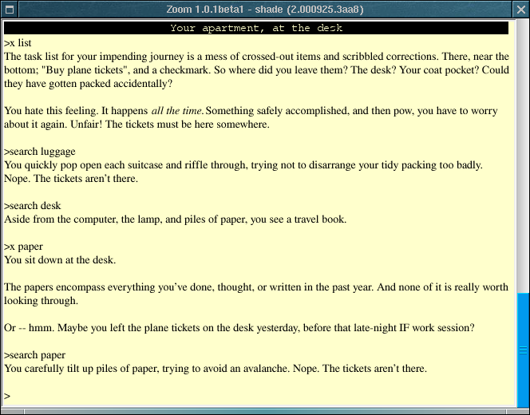

| Home | Previous | Next |

When Zoom has loaded a game, it displays a single window that contains the text of the game. This window is mostly under the control of the game rather than Zoom itself: Zoom is concerned with formatting the output and getting your input. For games using Z-Machine versions other than 6, the window will be resizable, and will reformat itself dynamically when you do this (unlike most other interpreters, Zoom can show many configuration changes instantly). For these games, there will usually also be a scrollbar along the right hand side of the window that can be used to see text that has scrolled off the top of the screen. Zoom will automatically display a '[MORE]' prompt when a game has filled a page with text: just hit a key to carry on.
Zoom will present you with a flashing caret whenever it is possible to send input to the game, and provides some simple line-editing functions. The up and down arrow keys can be used to recall commands typed earlier, and the left and right keys can be used to edit the current command. Some games may request use of the arrow keys, disabling Zoom's support for line-editting. Games may also handle input one character at a time. Finally, some games may allow you to use the mouse to select elements on screen.
Some games require extra resources. The easiest way for an author to provide these it to provide the whole game as an 'executable' Blorb file (.zlb). Failing that, you will need to let Zoom know how to find the resources for a game: the simplest way is to put the resources in the same directory as the game, with the same name except for the extension, which should be '.blb' (ie, if you have a game 'Zork0.z6', you would put its resources in 'Zork0.blb'). Zoom can not read the old Infocom-style resources - however, Blorb versions of all the resources for the old Infocom games can be obtained from the IF-Archive, located at http://www.ifarchive.org.
Under Mac OS X, games can be loaded in one of two ways: either by opening one from the Finder, or by loading Zoom and choosing one from the file open dialog that appears. If a game has resources, these can be located in one of three ways: by putting the resources in the same directory as the game, with the same name, except for a .blb extension, by dragging the resource file to Zoom or by opening the resource file while a game is loaded. Zoom will remember where the resources for a game were last found, and will look there again next time. You may need to restart a game after loading new resources.
Function key handling in Zoom works the same way as it does in Infocom's own interpreters. That is, function key x is activated by Command-x (eg Command-1 for function key 1).
Unlike the X Windows version of Zoom, the Mac OS X version allows for complete customisation using the user interface. This is achieved through the Preferences dialog: see the Mac OS X configuration page for more details.
Under X-Windows, Zoom is usually started from the command line with a single parameter - the name of the game to be run. If it has been configured, Zoom can also be started without a paramter - in this case, it will present a menu of games to choose from. The option '-w' can be used to ask Zoom to present warnings about the game (things the game does that may cause problems). For programmers, the '-D' option may be used to enable the symbolic debugger (a suitable gameinfo.dbg file must be present: compile with the -k option to Inform).
Zoom written by Andrew Hunter. Mail any suggestions, bug reports or abuse to andrew@logicalshift.demon.co.uk